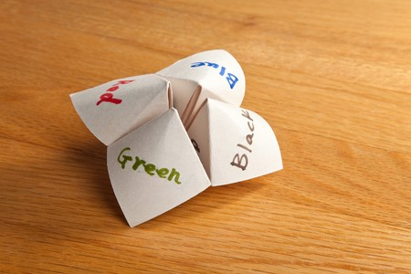

Hello, world! My name is America Munoz, I am a senior graduating from National Louis University with a Bachelor of Science degree in Computer Science and Information Systems. As a first generation student the value of education has a profound significance in my life. My parents have instilled the phrase: knowledge is power, I hold that very dear to me and am eager to actively continue learning. Below is a collection of the projects that have contributed to my growth as a Data Analyst. In a technology changing world I'm committed to embracing every opportunity and expanding my knowledge and skills.
1 / 9
1st Place Awardee of NLU CSIS Symposium Tech Project Showcase - April 2024
2 / 9
Presented at NLU CSIS Symposium - April 2024
3 / 9
Google Site Visit - 2024
4 / 9
Google Site Visit - March 2024
5 / 9
NLU Career Fair - September 2023
6 / 9
Presented at WPI Data Science REU Symposium - August 2023
7 / 9
Richard Tapia Celebration of Diversity in Computing Cohort - September 2022
8 / 9
Girls Who Code Summer Camp - July 2022
9 / 9
Girls Who Code Summer Camp - August 2022
❮
❯

The Research Experience for Undergraduates (REU) summer research programs funded by the National Science Foundation, offering opportunities for undergraduates in STEM fields across various locations in the United States. These programs are designed to provide students with immersive research experiences and valuable insights into graduate education. Participants are matched with specific research projects and collaborate directly with faculty members and fellow researchers at their site.
Last summer, I had the privilege of joining the Interdisciplinary Data Science Research for Healthy Communities in the Digital Age program, hosted at Worcester Polytechnic Institute. In this program, I worked on a research project under the guidance of Professors Elke Rundensteiner and Shichao Liu, alongside Ph.D. students Ricardo Flores, Avantika Shrestha, Xingtong Guo, and undergraduate researchers Nikola Grozdani and Alexander Pietrick.
Our project involved analyzing physiological data obtained from Fitbit devices during the COVID-19 pandemic. Through the creation of multiple machine learning models, we aimed to screen this physiological data alongside depression screening surveys completed by 166 college students. Our most successful model achieved an impressive F1-score of 0.92 when evaluating these physiological modalities. Our research was published and presented at the 2023 MIT IEEE Undergraduate Research Technology Conference (URTC), shining a light on the potential of digital technology advancements in enhancing current clinical practices.
This research was part of the EMUTIVO project, which focuses on leveraging novel data sources to develop innovative methods for detecting emotions, moods, and mental health states.

On April 15, 1912, the infamous Titanic Ocean liner on a voyage to New York City struck an iceberg and sank in the middle of the North Atlantic Ocean. There were an estimated 2,200 passengers and crew on board; about 1,500 people died. The ship was equipped with 20 lifeboats despite the capacity of 48. The catastrophe spurred major changes to maritime safety regulations serving as a reminder of the human cost of negligence at sea.Through this analytical endeavor, the project seeks to shed light on the factors influencing survival outcomes in one of history's most infamous maritime disasters.

This project provides an excellent opportunity to refine exploration and data cleaning techniques while utilizing Google Colab, a powerful platform for collaborative coding. Initially, the focus is on thoroughly exploring the dataset's intricacies, leveraging libraries like Scikit-learn and Matplotlib to generate summary statistics, visualize distributions, and identify outliers. This process not only ensures familiarity with the data but also visualizes a roadmap to fully leverage the dataset's capabilities.

In this project, I dived into sales data from a bakery collected in 2020, using Excel's robust features for in-depth analysis. My aim was to sharpen my Excel skills by working with a manageable dataset. As such the data preprocessing and visualizations were all done through Excel.

This Java program serves as an immersive learning experience, delving into various Java techniques and methods while practicing object-oriented programming. It introduces a user-friendly interface for managing a restaurant's menu, facilitating seamless addition, deletion, and modification of menu items.

This program offers an opportunity to apply the use of global variables and functions across multiple files. It's essentially a storytelling game with multiple chapters, each presenting its own challenges for players to overcome. The adventure begins as the player falls into an alternate universe.

This project was a fun way to practice commonly used Python techniques while at the same time, bringing back the nostalgic charm of the childhood paper fortune-telling game. Inspired by the classic origami game, it offers a dynamic twist using Python's versatility making it feel like your destiny is truly in the hands of code.

This Python game was crafted as a practical exercise to hone my Python skills while at the same time offering an engaging gameplay experience. It's based on the classic intransitive hand game commonly played between two individuals. Just like its real-life counterpart: Rock triumphs over Scissors, Scissors defeat Paper, and Paper outwits Rock, this Python version adheres to the same rules.